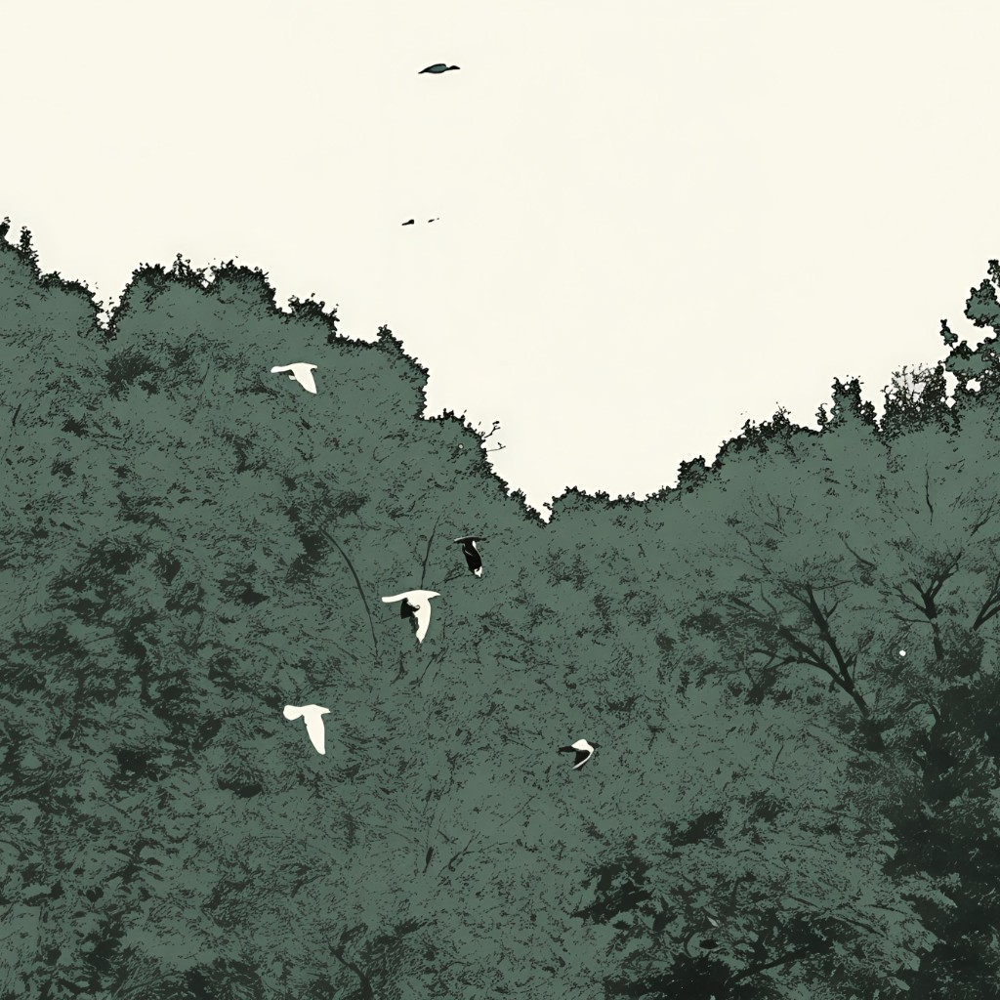
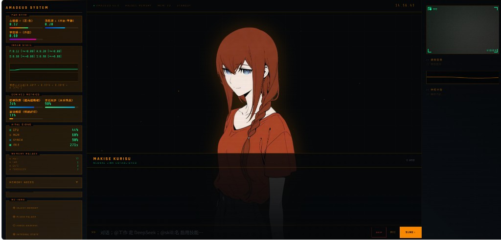

让数字人格拥有开口前的内心
人格连续性、情绪状态、记忆调用和行为倾向在生成之前完成整合，每一次表达都来自持续运行的内部状态。
人格连续性、情绪状态、记忆调用和行为倾向在生成之前完成整合，每一次表达都来自持续运行的内部状态。

按语义房间检索长期记忆，让过去参与当下判断，并减少关系叙事断裂。
P / A / D / S 持续更新，情绪成为表达前的内部状态。
候选行为先竞争，再决定回复倾向、语气强度和表达边界。
基于关系、空闲、轮次和内在驱力决定主动开口。
